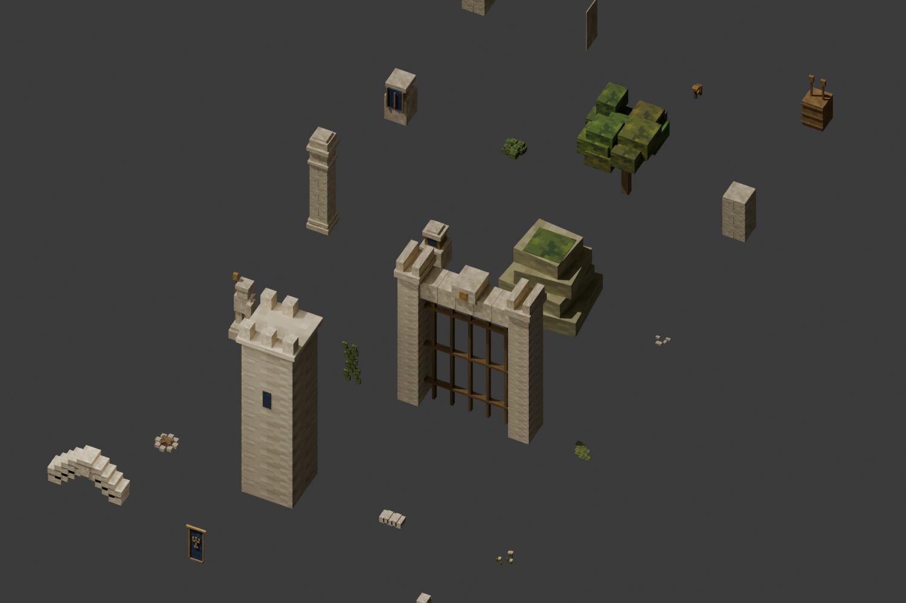

石卫遗迹 · Blender 首轮样板
手机横屏优先。共用建筑已接入 1–5 层，本轮重点验收荒庭、坍拱双径与连接通路。下方为游戏 WebGL 实际截图；俯视和侧视使用检视相机，完整移动端截图保留触屏控件。
已调整墙缝、石块咬合、高拱比例、旗帜遮挡、藤蔓与地面点缀。雕刻精度、自然残损和远景地形仍待后续提升；尚未达到参考图的全部细节水平。
目标参考

荒庭
坍拱双径
细节与移动端
光照与固定火源
可复用模型库

模型几何和材质共享，通过程序按网格实例化；材质源图与 Blender 文件均保留。